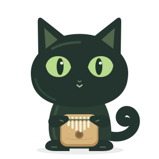
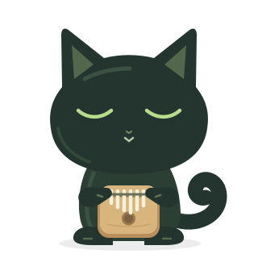
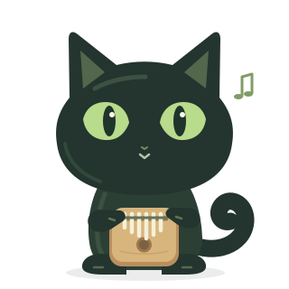
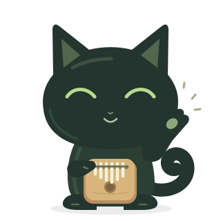

01 · 安静待机IDLE
固定基准图。睁眼，双爪抱琴。
A LITTLE COMPANY, FRAME BY FRAME
一只抱着卡林巴的小黑，六种陪你练琴的状态。每一帧共用同一套身体与锚点，只让眼睛、嘴角和手爪讲一点小故事。

TODAY'S PRACTICE BUDDY
眨一下眼，举一下爪。
把一点点陪伴，留在每次练习里。
当前：安静待机 · 无自动循环
固定基准图。睁眼，双爪抱琴。
只替换眼睛，身体与琴完全相同。

与半闭眼帧往返，形成一次轻眨。

右爪微移到琴键上，旁边多一个音符。

笑眼与抬爪差分，适合完成练习时。
闭眼、嘴角轻扬，依然稳稳抱着琴。
素材为本站手绘的《罗小黑战记》同人界面插画，非官方素材。角色及作品相关权利归原权利人；原创绘制的森林枝叶与界面布局独立制作。此页用于查看动作和检查逐帧稳定性。